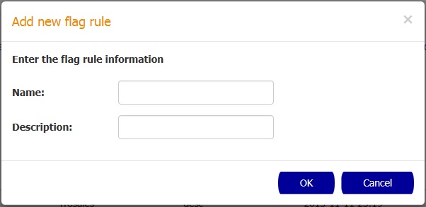

How to create a flagging rule
In order to create a new flagging rule you need to click the New button.

In the New Flagging Rule popup enter the name and description for the new flagging rule and then confirm the action by pressing the OK button.
How to delete flagging rules
In order to delete a set of flagging rules you need to select the checkboxes of the rules you want to delete and
click the Delete button.
After this, the Delete Flagging Rules popup is going to appear with a warning message and the name of the rules that were selected to be deleted. Click the OK button to confirm the action
How to display a flagging rule details
In order to display the Flagging Rule details you need to click the desired rule in the table. After the click the Flagging Rule Details page is going to be displayed.